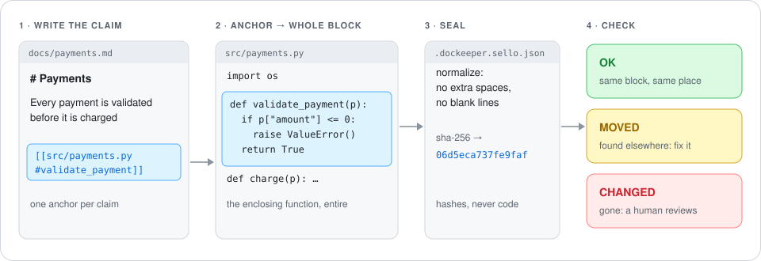
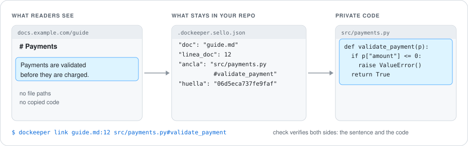

Agent Skill + CLI · open source · MIT
Documentation that doesn't rot.
DocKeeper anchors every claim in your docs to the code behind it, and tells you the moment that code changes. Your agent writes the docs. DocKeeper keeps them true.
Works with Claude Code, Codex, Gemini CLI, Cursor, GitHub Copilot and any Agent Skills agent. Python 3, zero dependencies.
# Payments
Every payment is validated before it is charged.
[[src/payments.py#validate_payment]]A successful charge returns its status.
[[src/payments.py:12]]$ dockeeper check CHANGED docs/payments.md:3 → src/payments.py#validate_payment MOVED docs/payments.md:4 → src/payments.py:12 $ echo $? 1
The problem
Writing docs is free now. Keeping them true isn't.
An agent can write a README in seconds. Three months later it describes functions that were renamed, flags that were removed and flows that changed, and nobody knows which pages are lying.
Docs drift silently
Nothing fails when code and docs disagree. The page just keeps saying the wrong thing.
Review doesn't catch it
A pull request that changes a function rarely touches the page that explains it.
Checkers are hosted and paid
Tools that tie docs to code usually live in someone's cloud. DocKeeper runs on your machine, for free.
How it works
Anchor. Seal. Check.
No model in the loop: DocKeeper compares normalized code blocks by fingerprint. The result is the same every time you run it.
Anchor every claim
Next to each sentence, point at the code that proves it: by symbol, by line, hidden in a comment, or stored outside the text.
It becomes a block
The whole enclosing function, class or method, not a fragile line range. Outside definitions, a small window around the line.
Seal a fingerprint
Normalized and hashed: reformatting is harmless, logic changes are not. The seal file stores hashes, never code.
Check, anytime
Locally, in a git hook or on every pull request. The exit code tells CI whether your docs are still true.
Same block, same place. Nothing to do.
Same block, elsewhere in the file. dockeeper fix relocates it for you.
The code changed. A person rewrites the claim, then accepts the new block.

fix only ever touches the seal file: it never rewrites your documents.Install
One folder. Every agent.
DocKeeper follows the open Agent Skills standard: the repository is the skill. Clone it into your agent's skills folder and start asking.
Claude Code — terminal, desktop app, VS Code or JetBrains
Available in every project. Type /dockeeper or just ask.
$ git clone https://github.com/Nokky21/DocKeeper.git ~/.claude/skills/dockeeperCodex, Gemini CLI, Cursor, GitHub Copilot and VS Code
All of them read the shared ~/.agents/skills folder.
$ git clone https://github.com/Nokky21/DocKeeper.git ~/.agents/skills/dockeeperWindows (PowerShell)
Same folders under your user profile. Use python if python3 is not on your PATH.
PS> git clone https://github.com/Nokky21/DocKeeper.git "$env:USERPROFILE\.claude\skills\dockeeper"Only for one repository
Commit it with the project so everyone on the team gets it. Use .agents/skills for non-Claude agents.
$ git clone https://github.com/Nokky21/DocKeeper.git .claude/skills/dockeeperNo agent: by hand, in a git hook or in CI
Run it from the root of the project you document.
$ git clone --depth 1 https://github.com/Nokky21/DocKeeper.git ~/dockeeper$ python3 ~/dockeeper/bin/dockeeper checkThe folder must be called dockeeper: the standard requires it to match the skill name. Requirements: python3 and git. Update with git -C ~/.claude/skills/dockeeper pull.
Then just ask
src/payments with dockeeper.”What your agent does
The same loop, every time.
The skill gives your agent one rule, every verifiable claim gets an anchor, and one workflow it can't skip.
Missing pages, docs without anchors, the biggest undocumented code.
README, architecture, decisions, runbooks, API, onboarding.
Reads the block each anchor landed on and fixes anchors that point at the wrong code.
The exit code decides. No green when nothing was checked.
Moved code is automatic. Changed code means rewriting the claim first.
Published docs
Publish docs without leaking your code.
Public pages can't carry internal paths or copied source, and they still need to be checked. Store the link outside the text: readers see clean prose, CI still verifies both the sentence and the code.

publico: private code
No anchors, no internal paths, no copied code. Bind claims with dockeeper link guide.md:12 src/payments.py#validate_payment.
publicado: public code
Anchors allowed (hidden ones read best). Copying three or more lines of source is flagged with the file it came from.
Continuous integration
Keep it true on every pull request.
The repository is also a GitHub Action. Anywhere else, it is two lines of shell.
# .github/workflows/docs.yml name: docs on: [push, pull_request] jobs: dockeeper: runs-on: ubuntu-latest steps: - uses: actions/checkout@v6 - uses: Nokky21/DocKeeper@v0.1.0
# any other CI git clone --depth 1 \ https://github.com/Nokky21/DocKeeper.git /tmp/dk python3 /tmp/dk/bin/dockeeper check # narrow it to one part of the repo python3 /tmp/dk/bin/dockeeper check --solo src/payments
Principles
Free, local and complete.
No account, no server
It runs where your code is: your machine or your CI.
No network
Your code never leaves the machine. The seal stores hashes, not code.
No AI in the engine
The agent writes. DocKeeper verifies, deterministically.
Zero dependencies
Python standard library only. The folder is the whole install.
The full engine, MIT
Every check is in the open-source version.
It checks itself
Its own README is sealed. CI fails if the docs stop being true, on Linux, macOS and Windows.
Honest limits
- It compares content, not meaning: a block rewritten with the same behavior is reported as
CHANGED. - Copies that are not contiguous go unnoticed, and copies of one or two lines are allowed on purpose.
- Definitions are found with patterns, not a parser. Rare constructs fall back to the enclosing definition, and
scanshows every block so you can confirm it. - It checks that documentation is still true, not that it is useful.
FAQ
Questions
Which agents can use it?
Any agent that supports the Agent Skills standard and can run shell commands: Claude Code, Codex, Gemini CLI, Cursor, GitHub Copilot in VS Code and many more. In a chat without a terminal (for example claude.ai) it can draft documentation, but the chat has no access to your repository, so it can't keep docs verified.
Does my code leave my machine?
No. DocKeeper makes no network calls. The seal file contains file paths, line numbers and hashes, never code.
Do I need an AI model to run the check?
No. Your agent uses the skill to write documentation; the check itself is plain Python and runs anywhere, including CI.
What happens when I rename a function?
Anchors to it report CHANGED (symbol not found). Update the anchor in the document and run dockeeper scan.
What should I commit?
Your documents, .dockeeper.json if you use one, and .dockeeper.sello.json, the seal that CI checks against.
Is the CLI in English?
Its messages are in Spanish today. Verdict codes and the --json output are stable, so agents and scripts are not affected.
Make every claim in your docs provable.
Install it once and ask your agent to document the repository.
$ git clone https://github.com/Nokky21/DocKeeper.git ~/.claude/skills/dockeeper